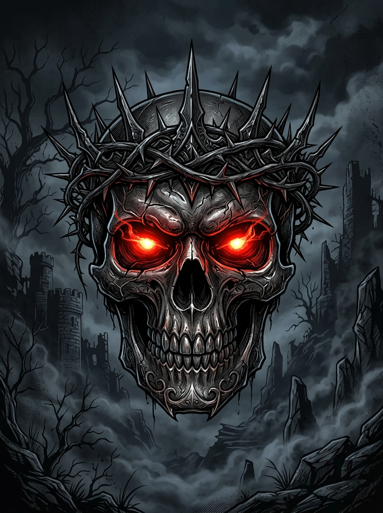
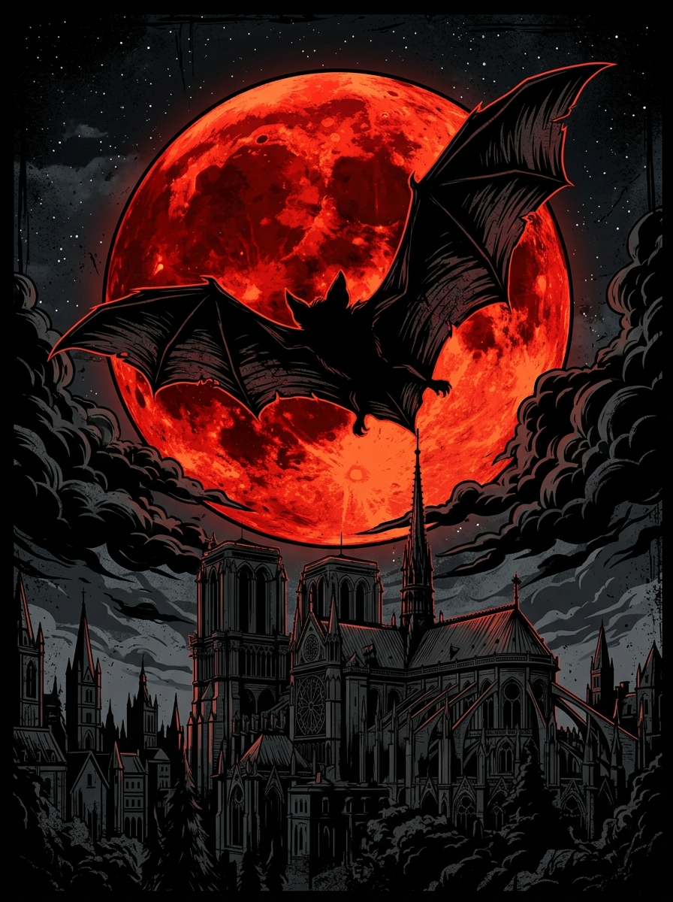
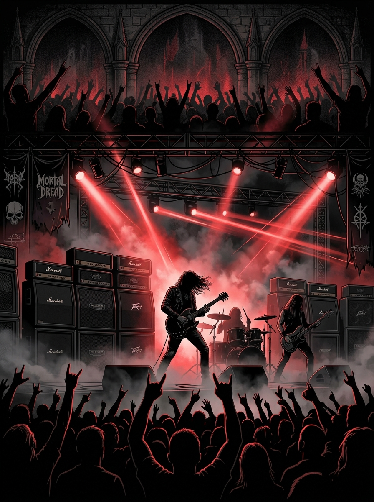
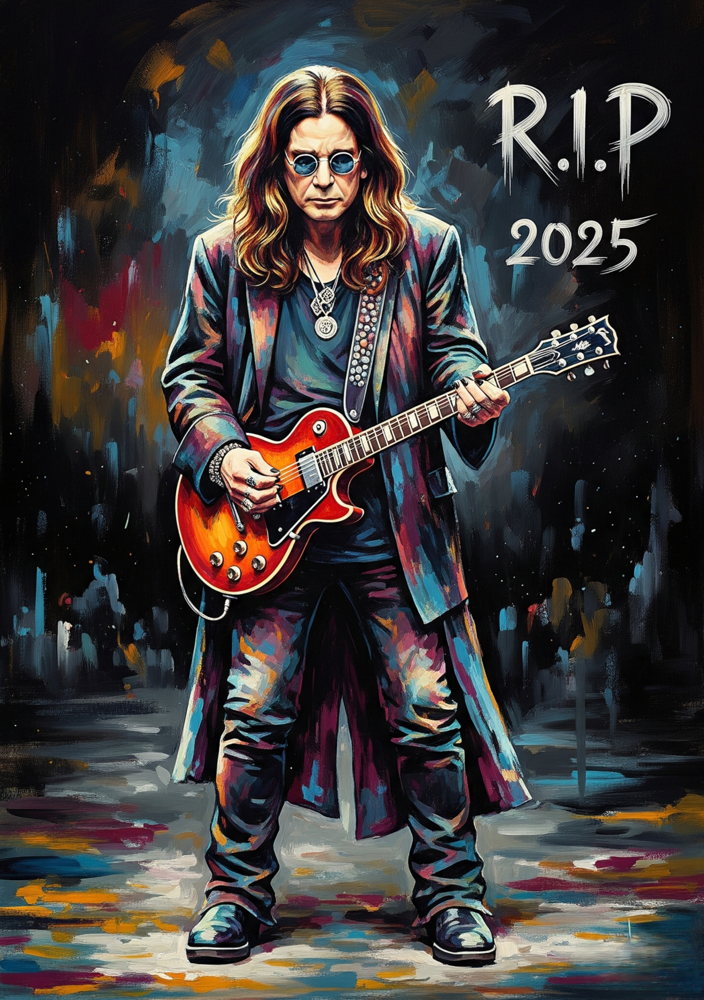

Timeline einer Legende
👶 Geboren in Birmingham
John Michael "Ozzy" Osbourne wird in Aston geboren. Ein Arbeiterkind, das die Welt verändern sollte.
🎸 Black Sabbath
Die Geburtsstunde des Heavy Metal. Mit düsteren Riffs und Ozzys Stimme beginnt eine neue Ära.
🚀 Solo-Karriere
Nach dem Aus bei Sabbath startet Ozzy mit "Blizzard of Ozz" voll durch. "Crazy Train" wird zur Hymne.
Randy Rhoads prägt als Gitarren-Genie den unverkennbaren Sound, bis er 1982 tragisch verunglückt.
🦇 Der Fledermaus-Vorfall
In Des Moines beißt Ozzy einer Fledermaus den Kopf ab – aus Versehen, aber legendär für die Ewigkeit!
🤘 Das Ozzfest
Ozzy gründet zusammen mit Sharon das legendäre Ozzfest und schafft damit die größte globale Bühne für Newcomer und Giganten des Heavy Metal.
📺 The Osbournes
Ozzy wird zum Reality-TV Star auf MTV. Die ganze Welt liebt das Chaos der Familie Osbourne.
👑 R.I.P. Prince of Darkness
Ozzy verlässt die Bühne des Lebens, aber sein Erbe ist in jedem Metal-Riff unsterblich. Forever in our hearts. 🖤
Galerie - The Visual Legacy






Tribute Wall
Es brennen 0 Kerzen.
Wisdom of Ozzy
Klick die Kugel für ein Ozzy-Zitat!
Oder drücke Q
Digitaler Schrein
Ziehe eine Gabe auf den Altar oder klicke sie an
⬇ Gabe hier ablegen